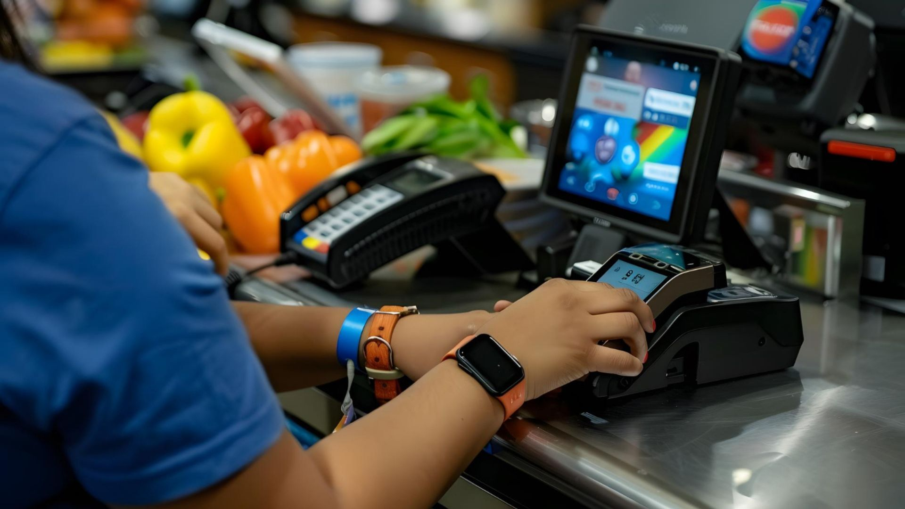

When it comes to running a business, whether big or small, your POS system is a crucial part of your daily operations.
It’s the tool that helps process payments, manage inventory, and often serves as the hub for tracking customer data. A modern POS device can do so much more than just handle transactions, it can streamline your business processes and improve efficiency. But with so many options on the market, how do you know what features to look for?
Here’s a guide to the important features you should consider when choosing a modern POS device for your business.
1. Ease of Use
No one has time to struggle with complicated technology. The best POS systems are those that are easy to use for both you and your team. Look for a device that has an intuitive interface like simple touchscreens and easy navigation. Whether your staff is tech-savvy or not, a straightforward system means less time spent learning and more time focusing on customers.
An easy-to-use POS system should allow employees to complete transactions quickly, reduce human error, and keep queues moving smoothly. An intuitive system also helps with training staff and new employees.
2. Flexible Payment Options
Today’s customers expect flexibility when it comes to paying for goods or services. Your POS system should be able to handle a variety of payment methods, including chip and pin cards, tap to pay, contactless payments (like Apple Pay or Google Pay), and traditional magnetic stripe cards.
Consider a POS system that also accepts mobile payments and online transactions. The more options you provide, the better experience you’ll offer your customers. Plus, a flexible POS system will ensure that you’re always ready for whatever payment trend comes next.

3. Robust Security Features
With the rise in cybercrime, security has never been more important, especially when handling sensitive customer information. When choosing a POS device, make sure it offers strong security features. Look for a system that is PCI DSS (Payment Card Industry Data Security Standard) compliant. This ensures that the system meets the security standards necessary for processing credit and debit card transactions.
Additionally, encryption is important for protecting both payment and personal information. A modern POS system should also feature multi-factor authentication to protect your business dealings from unauthorised access.
4. Inventory Management
Managing stock is a time-consuming but important part of running a business. Many modern POS systems come with built-in inventory management features, which can make tracking and ordering stock much simpler.
Look for a POS device that offers real-time inventory tracking. This will allow you to keep an eye on stock levels, receive alerts when items are running low, and even reorder products directly from the system. By integrating your inventory with your POS system, you reduce the risk of overselling or running out of stock, which can improve your customer satisfaction.
5. Customer Relationship Management
A modern POS device does more than just process sales, it can also help you build better relationships with your customers. Look for a POS system that includes CRM features. These allow you to track customer preferences, purchase histories, and even loyalty points.
CRM capabilities help you personalise the shopping experience for your customers, providing personalised promotions or discounts based on their previous interactions. Over time, you’ll gather valuable data that can help you better understand your customers’ needs and improve your marketing strategies.
6. Cloud-Based Functionality
Gone are the days of being tied to a specific location or device. With cloud-based POS systems, you can access your data from anywhere with an internet connection. This gives you the freedom to manage your business remotely and provides a backup in case of hardware failure.
Cloud functionality also makes it easier to scale your business. Whether you’re opening a new location or adding more employees, cloud-based POS systems can adapt quickly without requiring major changes to your infrastructure.
7. Integrated Reporting and Analytics
To make informed decisions, you need accurate data. Modern POS systems often include built-in reporting and analytics tools, which give you insights into sales trends, customer behaviour, and financial performance. This feature allows you to track your business’s performance in real-time, which is invaluable for decision-making.
Look for a POS system that can generate detailed reports on sales, inventory, and even employee performance. These reports can help you identify areas for improvement and make data-driven decisions that lead to increased profitability.
8. Mobility and Portability
As businesses become more flexible, mobility is becoming increasingly important. Many modern POS devices are designed to be portable, allowing you to take payments anywhere in your store, at pop-up locations, or even at events.
Consider a POS device that allows for mobility without compromising on performance. Some systems come with handheld devices that work in tandem with your main terminal, giving you the flexibility to process transactions from anywhere.
9. Customisation Options
Every business is unique, so your POS system should be able to adapt to your specific needs. Look for a device that offers customisation options, such as personalised receipts, customisable menus, different user permissions and branding customisation to match your business identity.
Having the ability to customise the POS system to your business can help ease up the operations and improve the overall customer experience. Plus, a system that can grow with your business will save you time and money in the long run.
10. Customer Support
Even the best POS systems sometimes experience issues. That’s why customer support is an important feature to look for. Look for a POS system with responsive customer support, so you can get help whenever issues arise.
Conclusion
A modern POS system should do more than just process payments. It should make your business run smoother and help you stay on top of things. At Access Computech, our POS systems are built to adapt to new technology, so you’re always ready for the next change. From accepting all types of payments to keeping track of your stock, our systems are made to support your business no matter what.
We’re here to support you with excellent customer service whenever you need it. Our team is always ready to assist, ensuring that your POS system works smoothly and your business runs without any difficulties.
When choosing a POS, think about how easy it is to use, how secure it is, and whether it can grow with your business. Our systems are designed to help you now and in the future.
Let’s chat about how we can help you find the right POS system for your business.